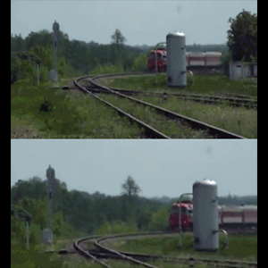
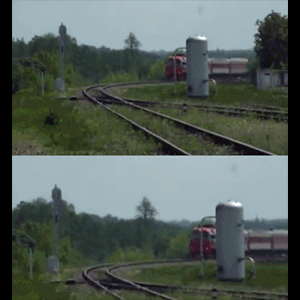
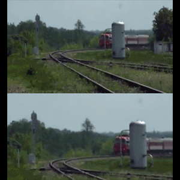
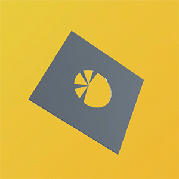
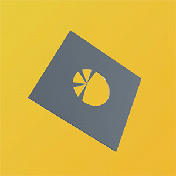

Video stabilizer
COS 429 Computer Vision, Fall 2019
Based on work by Matthias Grundmann, Vivek Kwatra and Irfan Essa for Google AI.
An infinite runner game in which a student driver must navigate down Princeton University's Washington Road.
Investigation of using TNNs on the N-way one-shot recognition task compared to that of naive methods and graphical models.

Based on work by Matthias Grundmann, Vivek Kwatra and Irfan Essa for Google AI.
An implementation of Fortune's Sweepline Algorithm for computing Voronoi diagrams.
 

Website and media created for Tendo Technologies, a startup in the Princeton University eLab summer incubator.